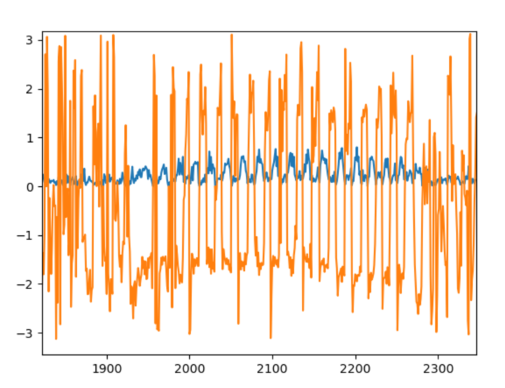

Nico Stuurman, 2020-08-14
Nico Stuurman, 2020-08-14
Micro-Manager development

- Move mailing list to forum
- Release 2.0 ~July
- Move to new C++ version
- Update build system
- Documentation/website
Deconvolution with Christina
Christina Gladkova
Live Deconvolution of Track1/MitoTracker
Projection of raw data
Projection of deconvolved data
Live Deconvolution of Track2MitoTracker
Raw
Deconvolved
Live Deconvolution of Track2MitoTracker
Raw
Deconvolved
Tools for Nadja
Nadja Kern
Channel Corrector Micro-Manager plugin

Fiji plugin: Spot Intensity in all channelis
Tools for Iris
Iris Grossman
MTrack2 output

Displacement and Direction
Power Spectra